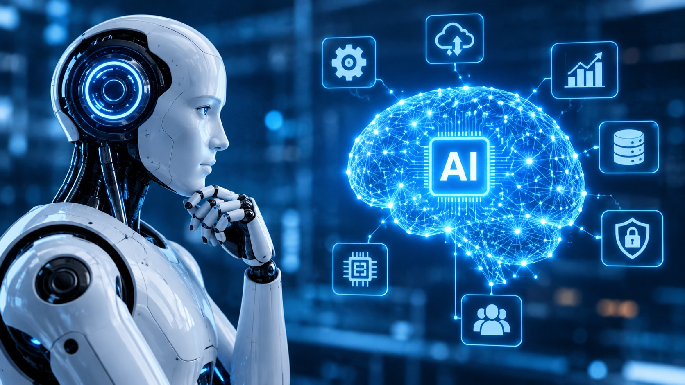

Incorrect AI Usage

Three Incorrect Ways to Use AI
- 1. Plagiarism
- Using AI to generate content and presenting it as your own work without proper attribution is considered plagiarism. This can lead to academic or professional consequences.
- 2. Misinformation
- Using AI to spread false or misleading information can have serious consequences, especially in areas like health, politics, and news.
- 3. Bias and Discrimination
- AI systems can perpetuate and amplify existing biases if not properly designed and monitored, leading to unfair treatment of certain groups.
Artificial Intelligence can be an extremely helpful tool, but students must use it responsibly.
Submitting AI-generated work without permission can be dishonest. Students should always check information and follow their instructors' policies.
In my opinion, AI should help students learn rather than replacing their own thinking.